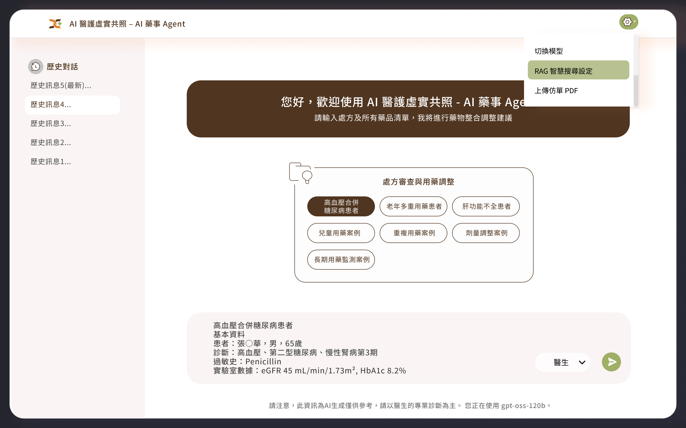

AI醫護虛實共照
智慧化臨床輔助工具，能即時分析患者診斷與用藥資料
- 智慧化臨床輔助工具，能即時分析患者診斷與用藥資料，提供藥師在處方開立與藥物管理上的建議。透過自然語言理解與醫藥知識庫結合。
虛實共照示意圖

適用情境
• 即時處方建議
針對醫師開立的藥品，快速檢查劑量、用法與適應症是否合理。
• 交互作用檢測
自動比對藥品之間、藥物與疾病或飲食間的潛在交互作用，降低用藥風險。
• 患者安全保障
即時提醒懷孕、哺乳、年齡或慢性疾病患者的特殊用藥限制。
• 智慧化輔助決策
提供參考建議與用藥依據，協助藥師快速審查處方，提升臨床效率。
- 藉由藥師 Agent，醫療單位能在不增加藥師負擔的情況下，強化處方審核品質，確保患者用藥安全與醫療合規性。